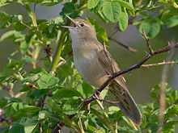
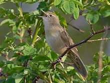

| Grasshopper Warbler | |
|---|---|
|  | |
| Conservation status | |
| Binomial name | |
| Locustella naevia (Boddaert, 1783) |
| Grasshopper Warbler | |
|---|---|
|  | |
| Conservation status | |
| Binomial name | |
| Locustella naevia (Boddaert, 1783) |
The Grasshopper Warbler, Locustella naevia, is an Old World warbler in the grass warbler genus Locustella. It breeds across much of temperate Europe and Asia. It is migratory, wintering from northwest Africa to India.
This small passerine bird is a species found in short dense vegetation, often close to water. 4-7 eggs are laid in a nest on the ground or a tussock.
This is a medium-sized warbler, 12.5-13.5 cm long. The adult has a streaked brown back, whitish grey underparts, unstreaked except on the undertail. The sexes are identical, as with most warblers, but young birds are yellower below. Like most warblers, it is insectivorous.
This is a skulking species which is very difficult to see except sometimes when singing. It creeps through grass and low foliage.
The song, which gives this species its name, is a monotonous mechanical insect-like reeling, often given at dusk.

{kind=link}